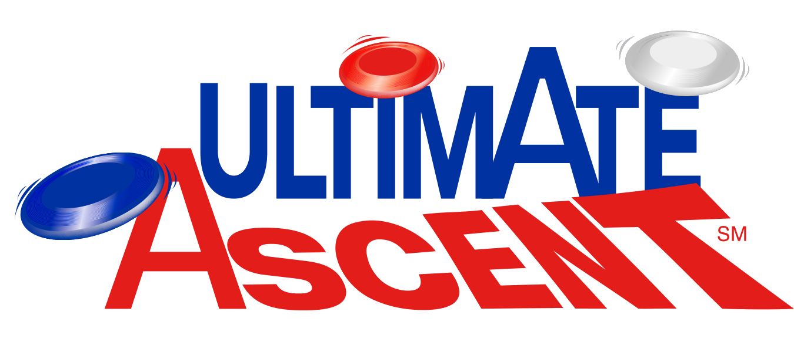

2013 Game: Ultimate Ascent
Reveal Video
Overview
 In Ultimate Ascent, two alliances consisting of three individual teams (red and blue), compete against each other to score the most points. The goal of the game is to score points by interacting with the field elements and scoring with the game pieces. Points are scored in one of two ways. The first and most common way, will be to successfully shoot or place the game pieces into one of four goals each alliance is allowed to score within. The second way is that robots can attempt to climb up their alliance's pyramid, earning points based on how far they can ascend. At the end of the 2 minute and 15 second match, the alliance who could score faster and climb the highest receives the most points and is declared the winner.
Game Objects
Ultimate Ascent is played using special FIRST discs. The discs are 11 inches in diameter and are made of 180 grams of hard plastic. Each disc has the FIRST logo on the front. Each robot is allowed to hold or control up to four of these discs at any one time.
The Field
Ultimate Ascent is played on a 27-foot by 54-foot field. Tape of the appropriate alliance color denotes where each alliance's feeder areas are located and where the game pieces are placed pre-game. Both ends of the field contain a single pyramid, one for each alliance. These pyramids can be climbed for additional points at the end of the match, and have a small goal at their top that the appropriate alliance can score in. Only robots of the correct alliance can climb a pyramid and interact with the robots attempting their own climbs. In addition, at both ends of the arena are four colored goals at three different heights, and each alliance's three feeder stations. The higher the goal is off the ground, the more points it is worth, but also the more difficult attempting to score in it is. At the feeder stations game pieces are entered into the field or into robots. Robots cannot be interfered with while at their alliance's feeder station. Behind the center goals on each side are the alliance stations, where teams operate their robots. In addition, due to the added safety risks of flying game pieces in this year's game, nets will be placed around the perimeter of the field to contain stray game pieces.
Autonomous Period
During the first 15 seconds of the match the drivers are not allowed to control their robots. Instead, teams pre-program their robots to be able to try and preform basic tasks, such as scoring discs, collecting discs from the floor, or simply moving around. If a robot can successfully score in one of the alliance station goals during this time, the points they score are doubled. Attempts to climb the pyramid or score on its goal do not give any points during this time.
Teleoperated Period
After the autonomous period drivers assume control of their robots. Teams are then able to score by shooting or placing the discs into the alliance goals. The lowest goals are worth 1 point per goal, the middle two alliance goals are worth 2 points, the highest alliance goal is worth 3 points, and the pyramid goals are worth 5 points each. At any point in Teleoperated period a team can decide to try and get bonus points by climbing their alliance pyramid. Points are awarded at the end of the match based on how high a robot climbed, as long as the robot managed to stay attached to the pyramid. The pyramid is split into three sections. In order to be considered in a higher section, a robot has to completely leave the section below it. The lowest section is worth 10 points, the middle section worth 20 points, and the highest section worth 30 points. All robots that successfully climbed their tower earn points for their team.
Scoring
In Ultimate Ascent the points are calculated during the match, so at the end of the match the total score for each alliance will be displayed. The total includes all of the points scored by the robots, the additional points from climbing their alliance pyramid, and any points from fouls. In Ultimate Ascent fouls give points to the other alliance, the amount varying depending on the severity of the foul. In the end the alliance with the largest point total wins.
| Frisbee | Auto | TeleOp |
| Low Goal | 2 | 1 |
|---|---|---|
| Middle Goal | 4 | 2 |
| High Goal | 6 | 3 |
| Pyramid Goal | N/A | 5 |
| Hanging | |
| Level | Points |
|---|---|
| 1 | 10 |
| 2 | 20 |
| 3 | 30 |